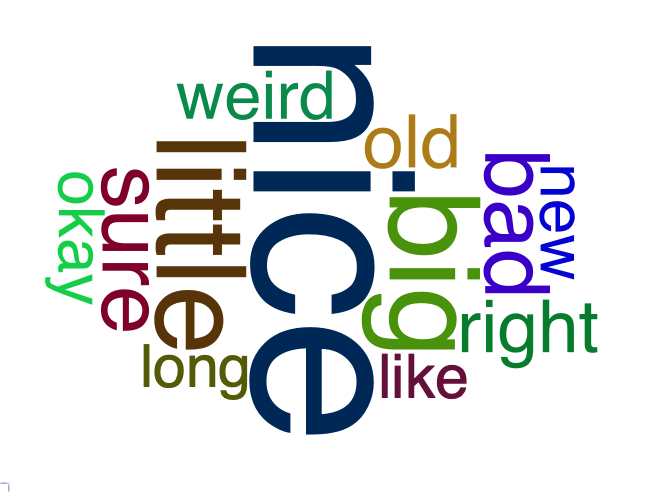

Chapter 12 Vector Space Representation
library(tidyverse)
library(quanteda)
library(quanteda.textstats)
library(quanteda.textplots)In this chapter, I would like to talk about the idea of distributional semantics, which features the hypothesis that the meaning of a linguistic unit is closely connected to its co-occurring contexts (co-texts). I will show you how this idea can be operationalized computationally and quantified using the distributional data of the linguistic units in the corpus.
Because English and Chinese text processing requires slightly different procedures, this chapter will first focus on English texts.
12.1 Distributional Semantics
Distributional approach to semantics was first formulated by John Firth in his famous quotation:
“You shall know a word by the company it keeps” (Firth, 1957, p. 11).
In other words, words that occur in the same contexts tend to have similar meanings (Z. Harris, 1954).
“[D]ifference of meaning correlates with difference of distribution.” (Z. S. Harris, 1970, p. 785)
“The meaning of a [construction] in the network is represented by how it is linked to other words and how these are interlinked themselves.” (De Deyne et al., 2016)
In computational linguistics, this idea has been implemented in the modeling of lexical semantics and documents topics. The lexical meanings of words or topics of documents can be computationally represented by the distributional information of their co-occurring words.
VSR For Words (Lexcial Semantics)
- On the one hand, one can extract the distributional information of target words automatically from large corpora, which are referred to as the contextual features of the target words.
- These co-occurrence frequencies (raw or weigthed) between target words and contextual features can be combined in long vectors, which can be utilized to computationally measure the lexical semantic distance or similarity.
VSR For Documents (Document Semantics/Topics)
- On the other hand, this distributional model can be applied to the semantic representation of documents in corpus as well. One can extract the distributional information of target documents automatically from large corpora, i.e., their contextual features.
- The co-occurrence frequencies between target documents and contextual features can also be combined in long vectors, which can also be utilized to computationally measure the document similarity/difference.
Therefore, this distributional approach to meanings is sometimes referred to as Vector Space Semantics.
12.2 Vector Space Semantics: Parameters
Different studies may however develop different operational definitions in their extraction of the contextual features for vector space model.
- Contextual Features Types:
- Bag-of-words: One can include all co-occurring words of the target word/document as contextual features (without considering the linear syntagmatic ordering of words).
- Structurally-dependent words: One can include co-occurring words of the target word/document within only particular morpho-syntactic frames (or of particular morpho-syntactic categories).
- Contextual Features Window:
- When adopting the bag-of-words approach to word meanings, one can determine the size of the context window for the contextual features inclusion (i.e., specify a certain number of tokens on the right and left from the target words).
- Co-occurrence Metrics
- The co-occurrence frequencies between target words/documents and contextual features can be statistically weighted to better represent their relationships. Common weights include tf.idf or Pointwise Mutual Information.
- Marginal Frequencies
- The co-occurrence frequencies may need to be evaluated according to the marginal frequencies of the contextual features.
- For example, given a co-occurrence frequency, 50, of a contextual feature with a document, it would be more indicative when the marginal frequency of the contextual feature is 100 (because half occurrences of the contextual feature go with the document).
- It would be much less indicative when its marginal frequency is 10,000 (because only a tidy proportion of the occurrences of the contextual feature go with the document).
- Dimensional Reduction
- When the target words/documents are represented as long vectors, they are often sparse vectors because most of their co-occurrence frequencies would be zero.
- There are some computational methods, which allow us to automatically extract the semantic fields from the word-based contextual features by reducing the dimensions of the long vectors.
- For example, it is possible that some of the contextual features (e.g., green, blue, and red) are connected semantically to form a semantic field (e.g., COLOR).
- A classic example is Latent Semantic Analysis, which is reminiscent of Principal Component Analysis.
For more information on vector-space semantics, I would highly recommend the chapter of Vector Semantics and Embeddings, by Dan Jurafsky and James Martin.
12.3 Vector Space Model for Documents
Now I would like to demonstrate how we can adopt this vector space model to study the semantics of documents.
12.3.1 Data Processing Flowchart
In Chapter 5, I have provided a data processing flowchart for the English texts. Here I would like to add to the flowchart several follow-up steps with respect to the vector-based representation of the corpus documents.
Most importantly, a new object class is introduced in Figure 12.1, i.e., the dfm object in quanteda. It stands for Document-Feature-Matrix. It’s a two-dimensional co-occurrence table, with the rows being the documents in the corpus, and columns being the features used to characterize the documents. The cells in the matrix are the co-occurrence statistics between each document and the feature.
Different ways of operationalizing the features and the cell values may lead to different types of dfm. In this section, I would like to show you how we create a dfm of a corpus and what are the common ways to define features and cell valus for the analysis of document semantics via vector space representation.
Figure 12.1: English Text Analytics Flowchart (v2)
12.3.2 Document-Feature Matrix (dfm)
To create a dfm, i.e., Dcument-Feature-Matrix, quanteda provides two alterantives:
- create
dfmbased on ancorpusobject - create
dfmbased on antokensobject
For English data, quanteda can take care of the word tokenization fairly well, so you can create dfm directly from corpus (See Figure 12.1 above)
In the chapter, Chinese Text Processing, we stress that the default tokenization method in quanteda with Chinese data may be limited in several ways. In order to create a dfm that takes into account the appropriateness of the Chinese word segmentation, I would highly recommend you to first create a tokens object using the self-defined word segmentation methods, and then feed it to dfm() to create the dfm for your corpus. In this way, the dfm will use the segmented results defined by your word segmenter.
In other words, with Chinese data, probably it is not really necessary to have a corpus object; rather, a tokens object of the corpus might be more useful/practical. (In quanteda, most of the functions for corpus can be applied to tokens as well, e.g., kwic(), dfm())
12.3.3 Corpus
In this tutorial, I will use the same English dataset as we discussed in Chapter 5, the data_corpus_inaugural, preloaded in the package quanteda.
For English data, the process is simple: we first load the corpus and create a dfm object of the corpus using dfm().
corp_us <- data_corpus_inaugural
corp_us_dfm <- corp_us %>% tokens() %>% dfm
Please note that the default data_corpus_inaugural preloaded with quanteda is a corpus object already.
class(data_corpus_inaugural)## [1] "corpus" "character"class(corp_us)## [1] "corpus" "character"class(corp_us_dfm)## [1] "dfm"
## attr(,"package")
## [1] "quanteda"12.3.4 Document-Feature Matrix (dfm)
What is dfm anyway? A document-feature-matrix is no different from a spead-sheet like table. In a dfm, each row refers to a document in the corpus, and the column refers to a linguistic unit that occurs in the document(s) (i.e., the contextual features in the vector space model).
If the linguistic unit you are interested in is a word, then this is a document-word-matrix, with the columns referring to all the words observed in the corpus, i.e., the vocabulary of the corpus. If the linguistic unit you are interested in is an n-gram, then this is a document-ngram-matrix, with the columns referring to all the n-grams observed in the corpus.
What about the cells? What values are usually stored in the matrix? The most intuitive values in the cells are the co-occurrence frequencies, i.e., the number of occurrences of the linguistic unit (i.e., column) in a particular document (i.e., row).
For example, in the corpus data_corpus_inaugural, based on the corp_us_dfm created earlier, we can see that in the first document, i.e., 1789-Washington, there are 2 occurrences of representatives, 48 occurrences of and.
A dfm with words as the contextual features is the simplest way to characterize the documents in the corpus, namely, to analyze the semantics of the documents by looking at the words occurring in the documents.
This document-by-word matrix treats each text as bags of words. That is, how the words are arranged relative to each other is ignored (i.e., the morphosyntactic relationships between words in texts are greatly ignored). Therefore, this document-by-word dfm should be a naive characterization of the texts.
In many computational tasks, however, it turns out that this simple bag-of-words model is very effective in modeling the semantics of the documents.
12.3.5 Distributional Hypothesis and Distance/Similarity Metrics
With the dfm, the idea is that if two documents have similar sets of linguistic units (i.e., contextual features) popping up in them, they are more likely to be similar in their semantics as well.
The advantage of creating a document-feature-matrix is that now each document is not only a series of character strings, but also a list of numeric values (i.e., a row of co-occurring frequencies), which can be compared mathematically with the other documents (i.e., the other rows).
Take a two-dimensional space for instance. If we have vectors on this space, we can compute their distance/similarity mathematically:
Figure 12.2: Vector Representation
In Math, there are in general two types of metrics to measure the relationship between vectors: distance-based vs. similarity-based metrics.
12.3.5.1 Distance-based Metrics
Many distance measures of vectors are based on the following formula and differ in individual parameter settings.
\[\big( \sum_{i = 1}^{n}{|x_i - y_i|^y}\big)^{\frac{1}{y}}\]
The n in the above formula refers to the number of dimensions of the vectors. (In other words, all the concepts we discuss here can be easily extended to vectors in multidimensional spaces.)
When y is set to 2, it computes the famous Euclidean distance of two vectors, i.e., the direct spatial distance between two points on the n-dimensional space.
\[\sqrt{\big( \sum_{i = 1}^{n}{|x_i - y_i|^2}\big)}\]
x <- c(1,9)
y <- c(1,3)
z <- c(5,1)# computing pairwise euclidean distance
sum(abs(x-y)^2)^(1/2) # XY distance## [1] 6sum(abs(y-z)^2)^(1/2) # YZ distnace## [1] 4.472136sum(abs(x-z)^2)^(1/2) # XZ distnace## [1] 8.944272The geometrical meanings of the Euclidean distance are easy to conceptualize (c.f., the dashed lines in Figure 12.3)

Figure 12.3: Distance-based Metric: Euclidean Distance
12.3.5.2 Similarity-based Metrics
In addition to distance-based metrics, the other type is similarity-based metric, which often utilizes the idea of correlations. The most commonly used one is Cosine Similarity, which can be computed as follows:
\[cos(\vec{x},\vec{y}) = \frac{\sum_{i=1}^{n}{x_i\times y_i}}{\sqrt{\sum_{i=1}^{n}x_i^2}\times \sqrt{\sum_{i=1}^{n}y_i^2}}\]
# comuting pairwise cosine similarity
sum(x*y)/(sqrt(sum(x^2))*sqrt(sum(y^2))) # xy## [1] 0.9778024sum(y*z)/(sqrt(sum(y^2))*sqrt(sum(z^2))) # yz## [1] 0.4961389sum(x*z)/(sqrt(sum(x^2))*sqrt(sum(z^2))) # xz## [1] 0.3032037The geometric meanings of cosines of two vectors are connected to the arcs between the vectors: the greater their cosine similarity, the smaller the arcs, the closer they are.

12.3.5.3 Computing pairwise distance/similarity using quanteda
In quanteda.textstats library, there are many functions that can help us compute pairwise similarities/distances between vectors using two useful functions:
textstat_simil()textstat_dist()
The expected input argument of these two functions is a dfm:
# check quantida similarity and distance metrics
xyz_dfm <-matrix(c(1,9,1,3,5,1), byrow=T, ncol=2) %>% as.dfm
xyz_dfm## Document-feature matrix of: 3 documents, 2 features (0.00% sparse) and 0 docvars.
## features
## docs feat1 feat2
## text1 1 9
## text2 1 3
## text3 5 1# Computing pairwise distance/similarity
# using `quanteda` functions
textstat_simil(xyz_dfm, method="cosine")## textstat_simil object; method = "cosine"
## text1 text2 text3
## text1 1.000 0.978 0.303
## text2 0.978 1.000 0.496
## text3 0.303 0.496 1.000textstat_dist(xyz_dfm, method = "euclidean")## textstat_dist object; method = "euclidean"
## text1 text2 text3
## text1 0 6.00 8.94
## text2 6.00 0 4.47
## text3 8.94 4.47 0(1- amap::Dist(xyz_dfm, method="pearson"))## text1 text2
## text2 0.9778024
## text3 0.3032037 0.496138912.3.5.4 Interim Summary
- The Euclidean Distance metric is a distance-based metric: the larger the value, the more distant the two vectors.
- The Cosine Similarity metric is a similarity-based metric: the larger the value, the closer the two vectors.
Based on our computations of the metrics for the three vectors, now in terms of the Euclidean Distance, y and z are closer; in terms of Cosine Similarity, x and y are closer.
Therefore, it should now be clear that the analyst needs to decide which metric to use, or more importantly, which metric is more relevant. The key is which of the following is more important in the semantic representation of the documents/words:
- The absolute value differences that the vectors have on each dimension (i.e., the lengths of the vectors)
- The relative increase/decrease of the values on ecah dimension (i.e., the curvatures of vectors)
There are many other distance-based or similarity-based metrics available. For more detail, please see Manning & Schütze (1999) Ch15.2.2. and Jurafsky & Martin (2020) Ch6: Vector Semantics and Embeddings.
12.3.6 Multidimensiona Space
Back to our example of corp_us_dfm, it is essentially the same vector representation, but in a multidimensional space (cf. Figure 12.4). The document in each row is represented as a vector of N dimensional space. The size of N depends on the number of contextual features that are included in the analysis of the dfm.

Figure 12.4: Example of Document-Feature Matrix
12.3.7 Vector Semantics Considerations
When representing the document semantics with contextual features in a multi-dimensional vector space, two factors would turn out to be very crucial:
- which contextual features are more representative to be included in the semantic analysis of documents?
- which quantitative metrics should be used to better represent the co-occurring relationship (i.e., association) between the documents and the contextual features?
In our current dfm based on bags of words, our concerns would be:
- which words should be included in the analysis of multidimensional representation?
- which quantitative metrics should be used to represent the relationship between the documents and the words?
12.3.8 Feature Selection
A dfm may not be as informative as we have expected. To better capture the documental semantic similarity, there are several important factors that need to be more carefully considered with respect to the contextual features of the dfm:
- The granularity of the features
- The informativeness of the features
- The distributional properties of the features
12.3.8.1 Granularity
In our previous example, we include only words, i.e., unigrams, as our features in the corp_us_dfm. We can in fact include linguistic units at multiple granularities:
- words
- (skipped) n-grams
- lemmas/stems
For example, if you want to include bigrams, not unigrams, as features in the dfm, you can do the following:
- from
corpustotokens - from
tokenstongram-based tokens - from
ngram-based tokenstodfm
corp_us_dfm_bigram <- corp_us %>%
tokens(what = "word") %>%
tokens_ngrams(n=2) %>% dfmOr for English data, if you want to ignore the stem variations between words (i.e., house and houses may not be differ so much), you can do it this way:
# unigram dfm + stem
corp_us_dfm_unigram_stem <- corp_us %>% tokens() %>% dfm() %>% dfm_wordstem()# bigram dfm + stem
corp_us_dfm_bigram_stem <- corp_us %>% tokens() %>%
tokens_ngrams(n = 2) %>%
dfm() %>%
dfm_wordstem()You need to decide which types of contextual features are more relevant to your research question. In many text mining applications, people often make use of both unigrams and n-grams. However, these are only heuristics, not rules.
corp_us, can you create a dfm, where the features are trigrams but all the words in the trigrams are word stems not the original surface word forms? (see below)
12.3.8.2 Informativeness
There are words that are not so informative in telling us the similarity and difference between the documents because they almost appear in every document of the corpus, but carray little (referential) semantic contents. These words are usually function words, such as and, the, of.
These common words observed in almost all documents are often referred to as stopwords. Therefore, it is not uncommon that analysts sometimes create a list of stopwords to be removed from the dfm. The library quanteda has defined a default English stopword list, i.e., stopwords("en").
stopwords("en") %>% head(50)## [1] "i" "me" "my" "myself" "we"
## [6] "our" "ours" "ourselves" "you" "your"
## [11] "yours" "yourself" "yourselves" "he" "him"
## [16] "his" "himself" "she" "her" "hers"
## [21] "herself" "it" "its" "itself" "they"
## [26] "them" "their" "theirs" "themselves" "what"
## [31] "which" "who" "whom" "this" "that"
## [36] "these" "those" "am" "is" "are"
## [41] "was" "were" "be" "been" "being"
## [46] "have" "has" "had" "having" "do"length(stopwords("en"))## [1] 175Also, there are tokens that usually carry very limited semantic contents, such as numbers and punctuation. Numbers, symbols and punctuations are often treated differently in computational text analytics.
When creating the dfm object, we can further specify a few parameters for the function dfm():
remove_punct = TRUE: remove all punctuation tokensremove = vector(): remove all words specified in the character vector here
corp_us_dfm_unigram_stop_punct <- corp_us %>%
tokens(remove_punct = T) %>%
dfm() %>%
dfm_remove(stopwords("en"))We can see that the number of features drops significantly after we remove stopwords:
nfeat(corp_us_dfm) # default unigram version## [1] 9439nfeat(corp_us_dfm_unigram_stem) # unigram + stem## [1] 5596nfeat(corp_us_dfm_bigram) # bigram## [1] 64442nfeat(corp_us_dfm_bigram_stem) # bigram + stem## [1] 58045nfeat(corp_us_dfm_unigram_stop_punct) # unigram removing stopwords and punks## [1] 928512.3.8.3 Distributional Properties
Depending on the granularity of the contextual features you are considering, you may get a considerably large number (e.g., thousands of ngrams) of features in your dfm matrix.
Another criteria relating to the distinctiveness of the features are their distributional properties. These can be very complicated but here we simplify these distributional criteria into three types:
- Frequency
- To make sure that the feature is important, we probably need to set a cut-off minimum frequency for a feature. For example, if the contextual word occurs only once in the corpus (i.e., hapax legomenon), these words may be highly idiosyncratic, which can be of little help in capturing the cross-document similarity. But on the other hand, we can also control the maximum frequency of the feature. If the word occurs very frequently, they may be a function word, carrying little semantic content.
- Dispersion
- If a word is more widely dispersed across different documents, they may be more informative in telling us the semantics of a group of documents. However, if a word occurs only in one particular document, this centralized distribution of the word may indicate that this feature is too domain-specific. Therefore, sometimes we can control the document frequency of the contextual features (i.e., in how many different texts does the feature occur?)
- Other Self-defined Weights
- It is true that many other factors may have a great impact on the co-occurrence frequencies we discuss so far. For example, given a co-occurrence frequency n for a word w in a document d, the significance of this n may be connected to:
- the document size of d
- the total number of w
- We can therefore utilize association-based metrics as weighted versions of the co-occurrence frequencies (e.g., PMI, LLR etc.)
- Also sometimes the importance of features comes with the theoretical assumptions. For example, in modeling the semantics of the documents, it is probably intuitive to assume that content words should carry more semantic content than functional words. So in the
dfmwe can include only words belonging to the lexical categories, such as nouns and verbs.
- It is true that many other factors may have a great impact on the co-occurrence frequencies we discuss so far. For example, given a co-occurrence frequency n for a word w in a document d, the significance of this n may be connected to:
quanteda for weighting of the document-feature matrix: dfm_weight(), dfm_tfidf().
In the following demo, we adopt a few simple distrubtional criteria:
- we create a simple unigram
dfmbased on the word-forms - we remove stopwords, punctuations, numbers, and symbols
- we remove contextual words whose freqency < 10, docfreq < 3, docfreq = ndoc(CORPUS)
corp_us_dfm_trimmed <- corp_us %>%
tokens(remove_punct = T,
remove_numbers= T,
remove_symbols = T) %>%
dfm() %>%
dfm_remove(stopwords("en")) %>%
dfm_trim(min_termfreq = 10, termfreq_type = "count",
min_docfreq = 3, max_docfreq = ndoc(corp_us)-1,
docfreq_type = "count")
nfeat(corp_us_dfm_trimmed)## [1] 140112.3.9 Exploratory Analysis of dfm
- We can check the top features in the current corpus:
topfeatures(corp_us_dfm_trimmed)## people government us can must upon great
## 584 564 505 487 376 371 344
## may states world
## 343 334 319- We can visualize the top features using a word cloud:
require(RColorBrewer)
set.seed(100)
textplot_wordcloud(corp_us_dfm_trimmed, max_words = 200, random_order = FALSE,
rotation = .25,
color = c('red', 'pink', 'green', 'purple', 'orange', 'blue'))12.3.10 Document Similarity
As shown in 12.4, with the N-dimensional vector representation of each document, we can compute the mathematical distances/similarities between two documents.
In Section 12.3.5, we introduced two important metrics:
- Distance-based metric: Euclidean Distance
- Similarity-based metric: Cosine Similarity
quanteda provides useful functions to compute these metrics (as well as other alternatives): textstat_simil() and textstat_dist()
When computing the document similarity/distance, we usually normalize the joint frequencies of contextual features (i.e., words) and documents, to reduce the impact of the marginal frequencies on the significance of the co-occurrence frequencies. In our current example, we adopted a simple method of normalization, i.e., converting the raw joint-frequencies into percentages. (i.e., dfm_weight(…, scheme = “prop”))
# Understanding `dfm_weight` prop normalization
# Check the first FIVE contextual features
# of the first document
# raw joint frequencies
corp_us_dfm_trimmed[1,1:5] ## Document-feature matrix of: 1 document, 5 features (0.00% sparse) and 4 docvars.
## features
## docs fellow-citizens senate house representatives among
## 1789-Washington 1 1 2 2 1# normalized prop using `dfm_weight()`
dfm_weight(corp_us_dfm_trimmed, scheme="prop")[1,1:5]## Document-feature matrix of: 1 document, 5 features (0.00% sparse) and 4 docvars.
## features
## docs fellow-citizens senate house representatives
## 1789-Washington 0.002427184 0.002427184 0.004854369 0.004854369
## features
## docs among
## 1789-Washington 0.002427184# intuition
corp_us_dfm_trimmed[1,1:5]/sum(corp_us_dfm_trimmed[1,])## Document-feature matrix of: 1 document, 5 features (0.00% sparse) and 4 docvars.
## features
## docs fellow-citizens senate house representatives
## 1789-Washington 0.002427184 0.002427184 0.004854369 0.004854369
## features
## docs among
## 1789-Washington 0.002427184corp_us_euclidean <- corp_us_dfm_trimmed %>%
dfm_weight(scheme="prop") %>%
textstat_dist(method="euclidean")
corp_us_cosine <- corp_us_dfm_trimmed %>%
dfm_weight(scheme="prop") %>%
textstat_simil(method="cosine")- Distance-based Results
- Cosine-based Results
Based on the distances/similarities, we can further examine how different documents may cluster together in terms of their contextual features (lexical) distributions.
Here we apply the hierarchical cluster analysis to examine the sub-groupings of the documents.
# distance-based
corp_us_hist_euclidean <- corp_us_euclidean %>% as.dist %>% hclust
plot(corp_us_hist_euclidean,hang = -1, cex = 0.6)# similarity
corp_us_hist_cosine <- (1 - corp_us_cosine) %>% as.dist %>% hclust
plot(corp_us_hist_cosine,hang = -1, cex = 0.6)
Please note that textstat_simil() gives us the similarity matrix. In other words, the numbers in the matrix indicate how similar the documents are. However, for hierarchical cluster analysis, the function hclust() expects a distance-based matrix, namely one indicating how dissimilar the documents are. Therefore, we need to use (1 - corp_us_cosine) in the cosine example before performing the cluster analysis.
Cluster anlaysis is a very useful exploratory technique to examine the emerging structure of a large dataset. For more detail introduction to this statistical method, I would recommend (gries2013?) Ch 5.6 and the very nice introductory book, Kaufman & Rousseeuw (1990).
12.4 Vector Space Model for Words
So far, we have been talking about applying the vector space model to study the document semantics.
Now let’s take a look at how this distributional semantic approach can facilitate a lexical semantic analysis.
With a corpus, we can also study the distribution, or contextual features, of words based on their co-occurring words. Now I would like to introduce another object defined in quanteda, i.e., the Feature-Cooccurrence Matrix fcm.
12.4.1 Feature-Coocurrence Matrix (fcm)
A Feature-Cooccurrence Matrix is essentially a word cooccurrence matrix. There are two ways to create a fcm:
- from
corpus/tokenstofcm - from
dfmtofcm
12.4.2 From corpus/tokens to fcm
We can create a word-cooccurrence matrix fcm directly from the corpus object.
We can further operationalize our contextual features for words:
- Window-based: Only words co-occurring within a defined window size will be included as contextual features
- Document-based: All words co-occurring in the same document will be included as contextual features.
- Example of Window-based
fcm:
# window-based
corp_fcm_win <- corp_us %>%
tokens(what = "word", remove_punct=T, remove_symbol=T, remove_numbers=T) %>%
fcm(context = "window", window = 1) # fcm based on window context
topfeatures(corp_fcm_win,n = 50)## our the in we is to
## 1978 1766 1359 1217 1062 884
## be a all for We people
## 875 777 749 740 715 679
## will their are and it that
## 661 652 608 555 554 546
## been this us States by not
## 530 527 498 467 444 434
## upon as do its world those
## 433 428 427 426 426 412
## must should peace Government It them
## 397 392 390 386 377 367
## great power Constitution any only freedom
## 361 355 339 325 321 314
## may government with they shall nation
## 302 301 299 297 289 288
## I so
## 283 274A look at the corp_fcm_win:
corp_fcm_win["our",] %>% topfeatures(10)## national institutions upon common Constitution Union
## 38 26 22 21 20 19
## children Nation fathers within
## 19 19 18 15corp_fcm_win["must",] %>% topfeatures(10)## We America do go continue There citizen keep
## 46 9 7 5 5 4 4 4
## carry realize
## 4 4- Example of Document-based
fcm:
corp_fcm_doc <- corp_us %>%
tokens(what = "word", remove_punct=T, remove_symbol=T, remove_numbers=T) %>%
fcm(context = "document") # same as the first one
topfeatures(corp_fcm_doc,n = 50)## our the to in and a
## 3176109 3022080 2619459 2586044 2310486 1982691
## be is we for their that
## 1923444 1828034 1671039 1449786 1286232 1254497
## are it will The not as
## 1212962 1185232 1140058 1136470 1081138 993573
## We by all which has its
## 979336 923827 908249 861352 857148 835208
## people upon or this us been
## 831527 822480 816930 809940 728218 716072
## of I should It must any
## 681721 678465 672000 668992 641750 641596
## have with them so States great
## 638159 626747 615322 600749 575961 574693
## Government power may they only at
## 570366 556246 544947 525462 522589 518657
## from Constitution
## 515615 491481corp_fcm_doc["our",] %>% topfeatures(10)## we our We us must upon should world any power
## 54260 47064 24405 21543 17170 15701 13697 12791 11170 10692corp_fcm_doc["must",] %>% topfeatures(10)## We us upon do any must only America peace when
## 5147 3914 3258 2126 2015 1996 1995 1956 1846 1506
In the above examples of fcm, you can in fact create the fcm directly with the corpus object (i.e., no need to transform the corpus into tokens).
But we choose the tokenize our corpus into tokens first and then create the fcm. The advantage of our current method is that we can manipulate the number as well as the types of tokens we would like to include in the fcm.
12.4.3 From dfm to fcm
A fcm can also be created from dfm. The limitation is that we can only create a document-based fcm from dfm.
But we can make use of the feature selection discussed in the previous sections to remove irrelevant contextual features before we create the fcm.
# convert `dfm` to `fcm`
corp_fcm_dfm <- corp_us_dfm_trimmed %>% fcm()
topfeatures(corp_fcm_dfm,n = 50)## upon us must peace freedom power
## 179044 151948 127748 116086 106320 104929
## government constitution part spirit law people
## 100582 98820 95195 89563 88701 79380
## laws business congress war state shall
## 78924 77645 76174 74119 73947 73720
## today best make within union world
## 72941 72190 71803 71153 70608 70446
## work let progress political come great
## 68762 68484 67070 65616 65338 65214
## always america purpose states god revenue
## 63302 61248 61052 60565 60324 59702
## americans force justice rights institutions countrymen
## 57926 57685 56809 56506 55619 54818
## republic true federal yet foreign others
## 54714 54148 54024 53330 52400 52114
## long action
## 51463 51055corp_fcm_dfm["people",] %>% topfeatures(10)## government upon us states great must
## 8094 5850 5292 5279 4658 4483
## people power shall constitution
## 4217 4060 3891 3881corp_fcm_win["people",] %>% topfeatures(10)## our American The are free themselves great
## 79 40 27 19 12 8 8
## It we Our
## 8 8 8corp_fcm_doc["people",] %>% topfeatures(10)## our we their are The We upon States us It
## 24668 12532 10826 9777 9064 5785 5759 5217 5202 518212.4.4 Which method to choose?
In quanteda, we can generate the fcm of a corpus, either directly from the corpus/tokens object or from the dfm object. The feature-cooccurrence matrix measures the co-occurrences of features within a user-defined context.
- If the input of
fcmis adfmobject, the context is set to be documents. In other words, the counts infcmrefers to the number of co-occurrences the two features within the same document. - If the input of
fmcis acorpus/tokensobject, we can specify the context to be a window size. The counts infcmrefers to the number of co-occurrences the two features within the window size.
We can conceptualize the structure of the fcm with a simple example:
x <- c("A B C A E F G", "B C D E F G", "B D A E F G")
corpus(x) %>% tokens() %>%
dfm %>%
fcm # fcm based on document context## Feature co-occurrence matrix of: 7 by 7 features.
## features
## features a b c e f g d
## a 1 3 2 3 3 3 1
## b 0 0 2 3 3 3 2
## c 0 0 0 2 2 2 1
## e 0 0 0 0 3 3 2
## f 0 0 0 0 0 3 2
## g 0 0 0 0 0 0 2
## d 0 0 0 0 0 0 0corpus(x) %>% tokens() %>%
fcm(context = "window", window = 2) # fcm based on window context## Feature co-occurrence matrix of: 7 by 7 features.
## features
## features A B C E F G D
## A 0 3 2 2 2 0 1
## B 0 0 2 0 0 0 2
## C 0 0 0 2 0 0 1
## E 0 0 0 0 3 3 2
## F 0 0 0 0 0 3 1
## G 0 0 0 0 0 0 0
## D 0 0 0 0 0 0 0corpus(x) %>% tokens() %>%
fcm(context = "document") # same as the first one## Feature co-occurrence matrix of: 7 by 7 features.
## features
## features A B C E F G D
## A 1 3 2 3 3 3 1
## B 0 0 2 3 3 3 2
## C 0 0 0 2 2 2 1
## E 0 0 0 0 3 3 2
## F 0 0 0 0 0 3 2
## G 0 0 0 0 0 0 2
## D 0 0 0 0 0 0 012.4.5 Lexical Similarity
fcm is an interesting structure because, similar to dfm, we can now examine the pairwise relationships between features. More specifically, we get to see how features (i.e., words, n-grams etc) are connected, or to what extent features are similar in their co-occurring contexts.
- We can perform feature selection using `fcm_select()`
- We can identify top important features from the `fcm`
- We can create the semantic network of the top features
- We can create the dendrogram of the top features# Create window-based `fcm`
corp_fcm_win_5 <- corp_us %>%
tokens(what = "word", remove_punct=T, remove_symbol=T, remove_numbers=T) %>%
fcm(context = "window", window = 5) # fcm based on window context
# Feauture Selection: remove stopwords
corp_fcm_win_5_select <- corp_fcm_win_5 %>%
fcm_select(pattern = stopwords(), selection = "remove", case_insensitive = T)
# Find top features
corp_fcm_win_5_top50 <- names(topfeatures(corp_fcm_win_5_select, 50))
corp_fcm_win_5_top100 <- names(topfeatures(corp_fcm_win_5_select, 100))
# plot network
fcm_select(corp_fcm_win_5_select, pattern = corp_fcm_win_5_top50) %>%
textplot_network(min_freq = 5)
# plot the dendrogram
## compute cosine similarity
corp_fcm_win_5_top100_cosine <- corp_fcm_win_5_select[corp_fcm_win_5_top100,] %>%
textstat_simil(method="cosine")
## create hclust
(1-corp_fcm_win_5_top100_cosine) %>% as.dist %>% hclust -> corp_us_fcm_win_5_top100_hclust
## plot dendrogram
plot(corp_us_fcm_win_5_top100_hclust, cex = 0.8,
main = "Top 50 Features",
xlab="", sub="")
The dfm or fcm come with many potentials. Please refer to the quanteda documentation for more applications.
12.5 Exercises
Exercise 12.3 In this exercise, please create a dendrogram of the documents included in corp_us according to their similarities in trigram uses.
Specific steps are as follows:
- Please create a
dfm, where the contextual features are the trigrams in the documents. - Please trim the
dfmaccording to the following distributional criteria:
- Include only trigrams consisting of
\\wcharacters - Include only trigrams whose frequencies are larger than 2.
- Include only trigrams whose document frequencies are larger than 2 (i.e., used in at least two different presidential addresses)
- Please use the cosine-based distance for cluster analysis
- A Sub-sample of the trigram-based
dfm(after the trimming according to the above distributional cut-off, the total number of trigrams in thedfmis: 7748):
- Example of the dendrogram based on the trigram-based
dfm:

Exercise 12.4 Based on the corp_us, we can study how words are connected to each other. In this exercise, please create a dendrogram of important words in the corp_us according to their similarities in their co-occurring words. Specific steps are as follows:
- Please create a
tokensobject ofcorpusby removing punctuations, symbols, and numbers first. - Please create a window-based
fcmof the corpus from thetokensobject by including words within the window size of 5 as the contextual words - Please remove all the stopwords included in
quanteda::stopwords()from thefcm - Please create a dendrogram for the top 50 important words from the resulting
fcmusing the cosine-based distance metrics. When clustering the top 50 features, use the co-occurrence information from the entirefcm, i.e., clustering these top 50 features according to their co-occurring words within the window size.
- A Sub-sample of the
fcm(after removing the stopwords, there are 9833 features in thefcm):
The dimension of the input matrix for
textstats_simil()should be: 50 rows and 9833 columns.Example of the dendrogram of the top 50 features in
fcm:

Exercise 12.5 In this exercise, please create a dendrogram of the Taiwan Presidential Addresses included in demo_data/TW_President.tar.gz according to their similarities in bigram uses.
Specific steps are as follows:
- Load the corpus data and word-tokenize the texts using
jiebaRto create atokensobject of the corpus - During the word-tokenization, please remove symbols by setting
worker(..., symbols=T) - Create the
dfmof the corpus, where the contextual features are the bigrams in the documents. - Please trim the
dfmaccording to the following distributional criteria:
- Include only bigrams whose frequencies >= 5.
- Include only bigrams whose document frequencies >= 3 (i.e., used in at least three different presidential addresses)
- Please use the cosine-based distance for cluster analysis
- A Sub-sample of the trimmed
dfm(Number of features: 337):
- Example of the dendrogram:

Exercise 12.6 Based on the Taiwan Presidential Addresses Corpus included in demo_data/TW_President.tar.gz, we can study how words are connected to each other. In this exercise, please create a dendrogram of important words in the corpus according to their similarities in their co-occurring words. Specific steps are as follows:
- Load the corpus data and word-tokenize the texts using
jiebaRto create atokensobject of the corpus - During the word-tokenization, please remove symbols by setting
worker(..., symbols=T) - Please create a window-based
fcmof the corpus from thetokensobject by including words within the window size of 5 as the contextual words - Please remove all the stopwords included in
demo_data/stopwords-ch.txtfrom thefcm - Please create a dendrogram for the top 50 important words from the resulting
fcmusing the cosine-based distance metrics. When clustering the top 50 features, use the co-occurrence information from the entirefcm, i.e., clustering these top 50 features according to their co-occurring words within the window size.
- A Sub-sample of the
fcm(After trimming, the number of features is: 4908):
The dimension of the input matrix for
textstats_simil()should be: 50 rows and 4908 columns.Example of the dendrogram: